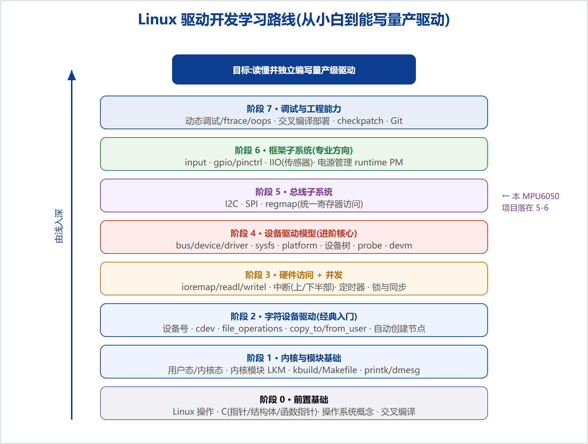
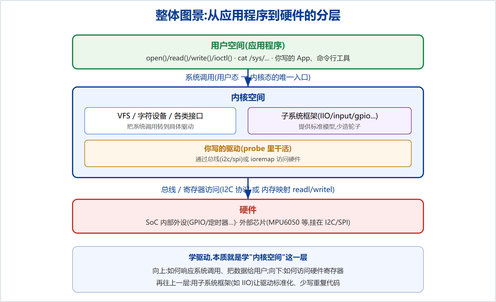

Linux 嵌入式驱动开发
入门知识体系
面向零基础 · 从底层到框架的系统学习路线
2026 年 9 月
怎么用这份文档
这是一份系统的、循序渐进的 Linux 驱动开发入门知识地图,按正规的学习顺序组织,和任何具体项目无关。它回答三个问题:要学哪些东西、按什么顺序学、每块的核心是什么。你可以把它当作学习路线和查漏补缺的清单。
驱动开发不是"背 API",而是一层层建立体系。下层不牢,上层必然一头雾水。所以请按阶段 0 → 7 的顺序,一层扎实了再上一层。每个阶段都给出"学什么 / 为什么重要 / 核心知识点 / 学完能做什么"。

图 1 Linux 驱动开发学习路线阶梯
先建立整体图景
学任何一块之前,先在脑子里有这张"从应用程序到硬件"的分层图(图 2)。驱动开发,本质就是学"内核空间"这一层:向上响应应用的系统调用、把数据交给用户;向下访问硬件寄存器。再往上一层,是用"子系统框架"让驱动标准化。

图 2 从应用程序到硬件的分层
目 录
阶段 0 前置基础
Linux 操作 · C 语言重点 · 操作系统概念 · 交叉编译
阶段 1 内核与模块基础
用户态/内核态 · 内核模块 · 构建系统 · 内核日志
阶段 2 字符设备驱动(经典入门主线)
设备号 · cdev · file_operations · 数据拷贝 · 自动建节点
阶段 3 硬件访问与并发同步
地址映射 · 寄存器读写 · 中断 · 定时器 · 锁
阶段 4 Linux 设备驱动模型(进阶核心)
bus/device/driver · platform · 设备树 · probe · devm
阶段 5 总线子系统
I2C · SPI · regmap
阶段 6 框架子系统(专业方向)
input · gpio/pinctrl · IIO · 电源管理
阶段 7 调试与工程能力
附录 推荐资源与练手路径
阶段 0 前置基础
学什么:动手写驱动之前必须具备的底子。缺了它们,后面每一步都会卡。
0.1 Linux 基本操作
- 命令行:文件与目录操作、
vim/编辑器、管道与重定向、查看日志。
- 文件系统与权限:
root 与普通用户、sudo、文件权限位。
- 软件与内核包:
apt 安装工具、内核头文件包。
0.2 C 语言重点(驱动几乎全用 C)
- 指针:地址、解引用、指针运算(驱动里到处是指针)。
- 结构体:驱动用大量结构体描述设备/驱动/操作集。
- 函数指针:回调机制的核心(如
file_operations 里一堆函数指针)。
- 位运算:读写寄存器全靠
& | ~ << >>。
- 预处理与头文件、
static/const、宏。
0.3 操作系统概念
- 用户态 vs 内核态:程序权限的两个世界,靠系统调用切换。
- 进程、内存(虚拟地址)、中断的基本概念。
- 并发:多个执行流同时访问同一资源会出问题(为阶段 3 的锁做准备)。
0.4 交叉编译概念
- 为什么要交叉编译:开发机是 x86,目标板是 ARM,架构不同。
ARCH、CROSS_COMPILE、工具链前缀(如 arm-linux-gnueabihf-)。
学完能做什么:能在 Linux 里自如操作、读懂 C 指针/结构体/函数指针、理解用户态与内核态的分界。
阶段 1 内核与模块基础
学什么:把代码"塞进内核运行"的机制,以及编译、加载、看日志的完整闭环。
1.1 用户态与内核态
应用程序运行在"用户态",权限受限;操作系统内核运行在"内核态",能直接访问硬件。二者通过系统调用(如 open/read/write)交互。驱动运行在内核态。
1.2 内核模块(LKM)
- 模块 = 可在运行时动态加载进内核的一段代码(
.ko)。
module_init()/module_exit():加载/卸载时调用的函数。- 模块参数、符号导出(
EXPORT_SYMBOL)、MODULE_LICENSE 等。
1.3 内核构建系统(kbuild)
- 模块必须用内核的构建系统编,不能用普通
gcc。
- Makefile 关键:
obj-m、KERNELDIR、-C $(KERNELDIR) M=$(PWD) modules。
1.4 加载与日志
- 加载:
insmod(按文件)/ modprobe(按名字,自动处理依赖,需 depmod)。
- 日志:
printk/pr_info/dev_info → dmesg 查看。
lsmod、modinfo 查看模块状态与信息。
学完能做什么:独立写一个 hello 模块,完成"编译 → 加载 → dmesg 看日志 → 卸载"的完整循环。
阶段 2 字符设备驱动(经典入门主线)
学什么:最经典的一类驱动,让用户能通过 /dev/xxx 像读写文件一样操作设备。它把"系统调用如何落到驱动"讲透。
2.1 设备号与设备节点
- 主设备号(哪个驱动)+ 次设备号(同类第几个)。
/dev/xxx 就是设备节点,用户通过它访问驱动。
2.2 注册字符设备
- 老接口:
register_chrdev;新接口:cdev_init/cdev_add + alloc_chrdev_region。
2.3 file_operations(核心)
- 一张函数指针表:
open/read/write/release/ioctl 等。
- 用户调
read() → 内核最终调用你 file_operations 里的 read。这就是"系统调用落到驱动"。
2.4 用户态/内核态数据拷贝
- 内核不能直接读写用户内存,必须用
copy_from_user/copy_to_user。
2.5 自动创建设备节点
class_create + device_create,配合 udev 自动在 /dev 下生成节点(免去手动 mknod)。
学完能做什么:写一个能被应用 open/read/write 的字符设备驱动(如控制一个 LED、读一个按键)。
阶段 3 硬件访问与并发同步
学什么:驱动怎么真正"碰"硬件,以及多个执行流并发时如何不出错。
3.1 地址映射与寄存器读写
- 物理地址 vs 虚拟地址、MMU;
ioremap 把外设寄存器物理地址映射到内核可访问的虚拟地址。
readl/writel 读写寄存器;位运算配置各个 bit。- (注意:只有 SoC 内部外设能这样直接映射;外部 I2C/SPI 芯片要走总线,见阶段 5。)
3.2 中断处理
- 为什么要中断:避免 CPU 空转轮询,硬件有事主动通知。
request_irq 注册中断;上半部(快、不可睡眠)+ 下半部(tasklet/workqueue/线程化中断,可做耗时/可睡眠的活)。
3.3 延时与定时器
- 忙等
udelay/mdelay vs 睡眠 msleep;内核定时器做周期任务。
3.4 并发与同步(极重要,面试常考)
- 竞态从哪来:多核、抢占、中断都会导致并发访问同一数据。
- 工具:原子操作、自旋锁(短临界区、不可睡眠、可用于中断)、信号量/互斥锁(长临界区、可睡眠)。
- 选择原则:临界区短且不睡 → 自旋锁;可能睡眠(如 I2C 传输)→ 互斥锁。
学完能做什么:能操作硬件寄存器、写中断处理、并用锁保护共享数据不出竞态。
阶段 4 Linux 设备驱动模型(进阶核心)
学什么:现代内核组织驱动的标准方式。这是从"入门"迈向"专业"的分水岭,也是大厂面试的重点。
4.1 bus / device / driver 模型
- 内核把驱动(代码)和设备(硬件描述)分开,由总线撮合。
- 驱动注册后"待命",声明认得哪些设备;总线上出现匹配设备 → 内核自动调
probe()。
sysfs/kobject:设备/驱动在 /sys 下的呈现。
4.2 platform 总线
- SoC 内部、非标准总线的设备用
platform_driver + platform_device。
- 这是"从字符设备手动式"过渡到"probe 模型式"的第一站。
4.3 设备树(Device Tree)
- 用一份
.dts 文本描述板上有哪些硬件(地址、中断、总线、参数),把硬件信息从代码里挪出去。
- 节点、属性、
compatible;驱动用 of_match_table 按 compatible 匹配。
of_ 系列 API 从设备树读属性。
4.4 probe/remove 与 devm 资源管理
probe:设备匹配上后初始化;remove:清理。devm_ 系列:按设备生命周期自动释放资源,免手写清理、防泄漏。
心智模型(务必建立):驱动是"待命"的;内核发现总线上出现匹配设备,才来敲你的 probe() 门。硬件信息不写死在代码里,而来自设备树。
学完能做什么:写一个 platform 驱动,用设备树描述硬件,理解 probe 匹配全过程。
阶段 5 总线子系统
学什么:外部芯片大多挂在标准总线上(I2C/SPI),内核为每种总线提供了驱动框架。
5.1 I2C 子系统
- I2C:两根线(SCL/SDA)、7 位地址的串行总线。
i2c_driver(驱动名片)+ i2c_client(总线上的具体设备)。- 读写:
i2c_smbus_read/write_* 或用 regmap。
- 关键:I2C 外部芯片不在 SoC 地址空间里,不能 ioremap,必须通过总线协议读写它的寄存器。
5.2 SPI 子系统
- 四线(SCK/MOSI/MISO/CS)、全双工、更快;
spi_driver/spi_device,思想与 I2C 类似。
5.3 regmap
- 统一的寄存器访问抽象:一套 API 屏蔽 I2C/SPI 差异,自带缓存与 debugfs 导出。
- 现代传感器驱动几乎都用 regmap,而不是裸
i2c_smbus。
学完能做什么:为一颗 I2C/SPI 芯片写 probe,用 regmap 读写它的寄存器(如读芯片 ID)。
阶段 6 框架子系统(专业方向)
学什么:内核为不同类别的设备提供了专门的子系统框架,用它们能少造轮子、且符合标准,直接对接上层生态。
| 子系统 | 用于 | 给你省了什么 |
|---|
| input | 按键、触摸、鼠标键盘 | 标准输入事件上报 |
| gpio / pinctrl | 引脚复用与 GPIO 控制 | 不用自己戳 GPIO 寄存器 |
| IIO | 传感器(加速度/光/温度/ADC) | 自动生成 sysfs 属性 + 字符设备、缓冲、触发、事件 |
| hwmon | 温度/电压/风扇监控 | 标准监控接口 |
| net / block / v4l2 | 网络 / 存储 / 视频 | 各自领域的完整框架 |
6.1 以 IIO 为例(传感器方向)
- 用
iio_chan_spec 描述通道(如加速度 x/y/z);实现 read_raw 返回数据。
- 框架自动生成
/sys/bus/iio/devices/iio:device0/in_accel_x_raw 等属性。
- 进阶:触发缓冲(中断驱动的数据流)、事件、电源管理。
6.2 电源管理(runtime PM)
- 让设备空闲时自动进低功耗、被访问时唤醒,是移动/嵌入式的重要工程点。
学完能做什么:为一颗传感器写符合 IIO 标准的驱动,用户能通过 sysfs/字符设备读数据。
阶段 7 调试与工程能力
学什么:让你从"能写"到"能查错、能交付"。这部分决定你的实际战斗力。
- 调试手段:
dmesg、动态调试(dev_dbg/dynamic debug)、ftrace 看函数时序、/proc 与 debugfs、oops/panic 调用栈分析、必要时 kgdb。
- 硬件级排查:逻辑分析仪/示波器抓 I2C/SPI 波形、
/proc/interrupts 看中断计数。
- 交叉编译与部署:为目标板编译,经 NFS/TFTP 加载,串口看日志。
- 代码规范与协作:内核 coding style、
checkpatch.pl、Git、持续集成(CI)。
学完能做什么:独立定位驱动问题、交叉编译部署到板子、按内核规范提交可维护的代码。
附录 推荐资源与练手路径
A.1 推荐资源
- 书:《Linux 设备驱动开发详解》(宋宝华)、《Linux Device Drivers 3rd》(LDD3,经典但偏老)。
- 官方文档:kernel.org 的
Documentation/(driver-model、i2c、iio、devicetree 等)。
- 源码:
drivers/ 下同类驱动是最好的范例(照着读)。
- 视频:正点原子 / 韦东山 的嵌入式 Linux 驱动系列(从字符设备到平台驱动到子系统,顺序和本文一致)。
A.2 建议练手路径(由浅入深)
- hello 模块 → 带参数的模块。
- 字符设备:控制 LED / 读按键(手动式,理解原理)。
- 改写成 platform 驱动 + 设备树(过渡到模型式)。
- 用 gpio/input 子系统重写按键(体会"用子系统"的好处)。
- I2C/SPI + regmap:驱动一颗真实芯片,读它的 ID。
- IIO:为一颗传感器写标准驱动,读出数据(综合实战)。
- 加中断、缓冲、电源管理,向量产级靠拢。
贯穿始终的方法:骨架优先 → 增量填肉 → 每加一小块就编译验证。不要一次写完再调,那样错误无从定位。
本文为 Linux 驱动开发入门的系统知识梳理,供零基础按阶段自学与查漏补缺。